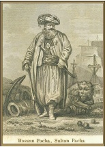

5-7 Temmuz 1770 tarihleri arasında yaşanan Çeşme Deniz Savaşı sırasında Kaptan-ı Derya Mandalzade Hüsamettin Paşa’nın yardımcısı olan Cezayirli Gazi Hasan Paşa bu savaşta gösterdiği yararlılıklar nedeniyle kısa sürede yükseldi ve III. Selim döneminde de Cezayirli Gazi Hasan Paşa adıyla sadrazam oldu. Bir lakabı da “palabıyık” olan Hasan Paşa son derece dürüst olmasıyla tanınırdı. Evcilleştirdiği aslanıyla İstanbul sokaklarında gezdiği zamanlarda dönemin fısıltı gazetelerinde her zaman manşette olan Hasan Paşa öldüğü zaman çok az bir mirası olabilecek derecede orta halli bir devlet adamıydı. Osmanlı-Rus Savaşı sırasında sefer masrafları için kendi cebinden 12.000 altın harcayacak kadar vatansever bir askerdi olan Hasan Paşa, aynı zamanda Cezayir Dayısı[19] olduğu dönemde ABD ile bir haraç anlaşması imzalamasıyla da ünlüdür.

Cezayir Dayısı Gazi Hasan Paşa’nın
Batılılar tarafından çizilen bir resmi